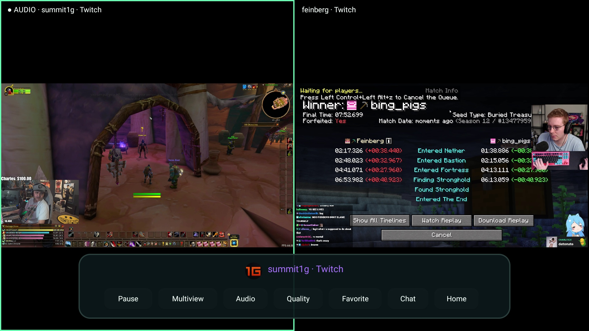
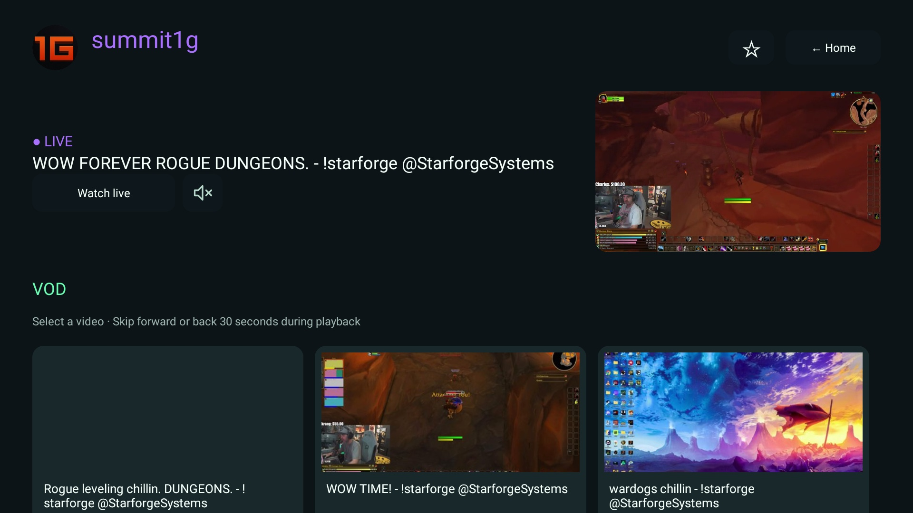

Your audio. Your call.
Switch the active audio without leaving multiview. Keep every perspective in sight.
YOUR STREAMS. YOUR BIG SCREEN.
Twitch and Kick, together at last.
Made for your TV. Controlled from your couch.
Fire TV · Android TV · Google TV¹

LESS SWITCHING. MORE WATCHING.
Connect your accounts. Find the channels you follow. Move from a live stream to available VODs, all in a remote-friendly interface.
ONE SCREEN IS JUST THE BEGINNING
LIVE NOW. CATCH UP LATER.
Explore available broadcasts in each channel profile. Seek through a VOD or continue from your saved position. Your progress stays on your device.

Switch the active audio without leaving multiview. Keep every perspective in sight.
Favorite a channel and receive a brief on-screen alert when it goes live while you watch another stream.
No TwiT subscription or advertising. Platform ads and streamer sponsorships may still appear.
YOUR NEXT WATCH STARTS HERE
Free download. Your accounts. Your channels.
Download latest APK ↗Version & release notes ↗On a compatible Fire TV or Android TV, open Downloader and enter this page’s address.
danikdejesus1.github.io/TwiT/Select Download latest APK. If prompted, allow Downloader to install apps and confirm the installation.
Open TwiT and connect Twitch or Kick from Accounts. For updates, install over your existing version to keep your settings.
¹ Requires Android 9 (API 28) or later. Tested on Fire TV HD with Fire OS 7. Android TV and Google TV compatibility varies by model. Samsung Tizen and LG webOS cannot install this APK natively; use a compatible HDMI streaming device.
² Performance depends on your device and connection. Four high-quality streams can exceed a Fire TV HD’s capacity. Reduce the quality or number of streams if playback stutters. Current multiview is for live streams, not synchronized VODs.
No. TwiT is an independent, experimental client by DanikDeJesus, not affiliated with Twitch, Kick or Amazon. Availability depends on the platforms. Creators shown in screenshots do not endorse TwiT.